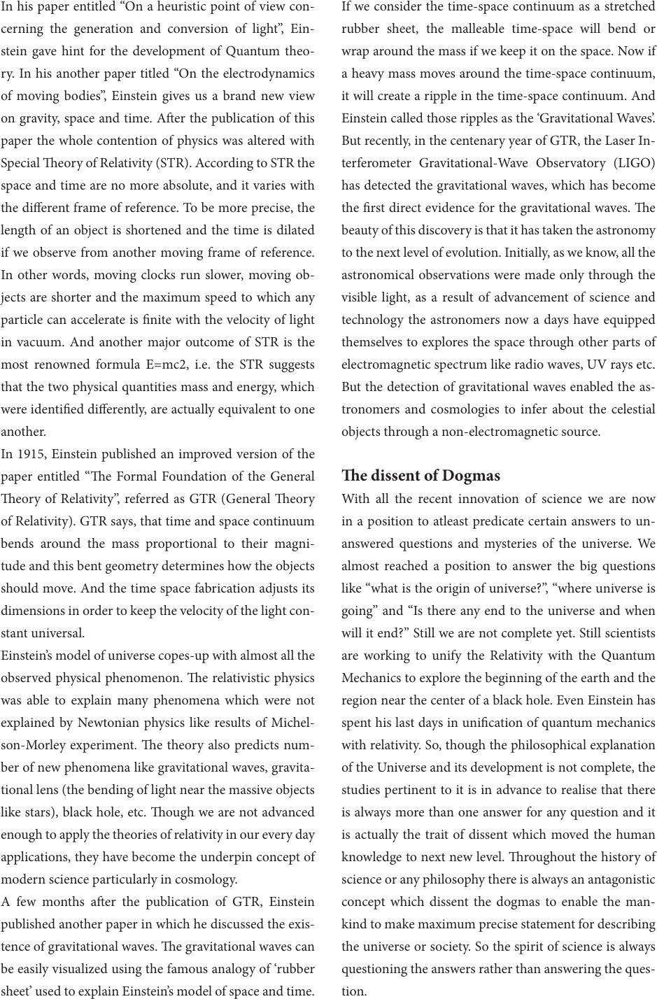

In his paper entitled “On a heuristic point of view con-
cerning the generation and conversion of light”, Ein-
stein gave hint for the development of Quantum theo-
ry. In his another paper titled “On the electrodynamics
of moving bodies”, Einstein gives us a brand new view
on gravity, space and time. Aer the publication of this
paper the whole contention of physics was altered with
Special eory of Relativity (STR). According to STR the
space and time are no more absolute, and it varies with
the dierent frame of reference. To be more precise, the
length of an object is shortened and the time is dilated
if we observe from another moving frame of reference.
In other words, moving clocks run slower, moving ob-
jects are shorter and the maximum speed to which any
particle can accelerate is nite with the velocity of light
in vacuum. And another major outcome of STR is the
most renowned formula E=mc2, i.e. the STR suggests
that the two physical quantities mass and energy, which
were identied dierently, are actually equivalent to one
another.
In 1915, Einstein published an improved version of the
paper entitled “e Formal Foundation of the General
eory of Relativity”, referred as GTR (General eory
of Relativity). GTR says, that time and space continuum
bends around the mass proportional to their magni-
tude and this bent geometry determines how the objects
should move. And the time space fabrication adjusts its
dimensions in order to keep the velocity of the light con-
stant universal.
Einstein’s model of universe copes-up with almost all the
observed physical phenomenon. e relativistic physics
was able to explain many phenomena which were not
explained by Newtonian physics like results of Michel-
son-Morley experiment. e theory also predicts num-
ber of new phenomena like gravitational waves, gravita-
tional lens (the bending of light near the massive objects
like stars), black hole, etc. ough we are not advanced
enough to apply the theories of relativity in our every day
applications, they have become the underpin concept of
modern science particularly in cosmology.
A few months aer the publication of GTR, Einstein
published another paper in which he discussed the exis-
tence of gravitational waves. e gravitational waves can
be easily visualized using the famous analogy of ‘rubber
sheet’ used to explain Einstein’s model of space and time.
If we consider the time-space continuum as a stretched
rubber sheet, the malleable time-space will bend or
wrap around the mass if we keep it on the space. Now if
a heavy mass moves around the time-space continuum,
it will create a ripple in the time-space continuum. And
Einstein called those ripples as the ‘Gravitational Waves’.
But recently, in the centenary year of GTR, the Laser In-
terferometer Gravitational-Wave Observatory (LIGO)
has detected the gravitational waves, which has become
the rst direct evidence for the gravitational waves. e
beauty of this discovery is that it has taken the astronomy
to the next level of evolution. Initially, as we know, all the
astronomical observations were made only through the
visible light, as a result of advancement of science and
technology the astronomers now a days have equipped
themselves to explores the space through other parts of
electromagnetic spectrum like radio waves, UV rays etc.
But the detection of gravitational waves enabled the as-
tronomers and cosmologies to infer about the celestial
objects through a non-electromagnetic source.
e dissent of Dogmas
With all the recent innovation of science we are now
in a position to atleast predicate certain answers to un-
answered questions and mysteries of the universe. We
almost reached a position to answer the big questions
like “what is the origin of universe?”, “where universe is
going” and “Is there any end to the universe and when
will it end?” Still we are not complete yet. Still scientists
are working to unify the Relativity with the Quantum
Mechanics to explore the beginning of the earth and the
region near the center of a black hole. Even Einstein has
spent his last days in unication of quantum mechanics
with relativity. So, though the philosophical explanation
of the Universe and its development is not complete, the
studies pertinent to it is in advance to realise that there
is always more than one answer for any question and it
is actually the trait of dissent which moved the human
knowledge to next new level. roughout the history of
science or any philosophy there is always an antagonistic
concept which dissent the dogmas to enable the man-
kind to make maximum precise statement for describing
the universe or society. So the spirit of science is always
questioning the answers rather than answering the ques-
tion.